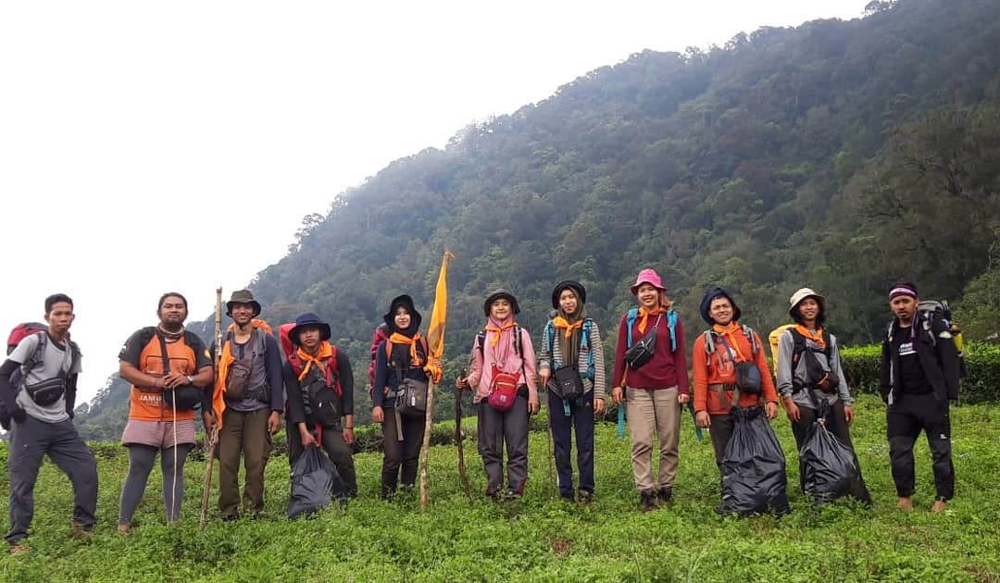
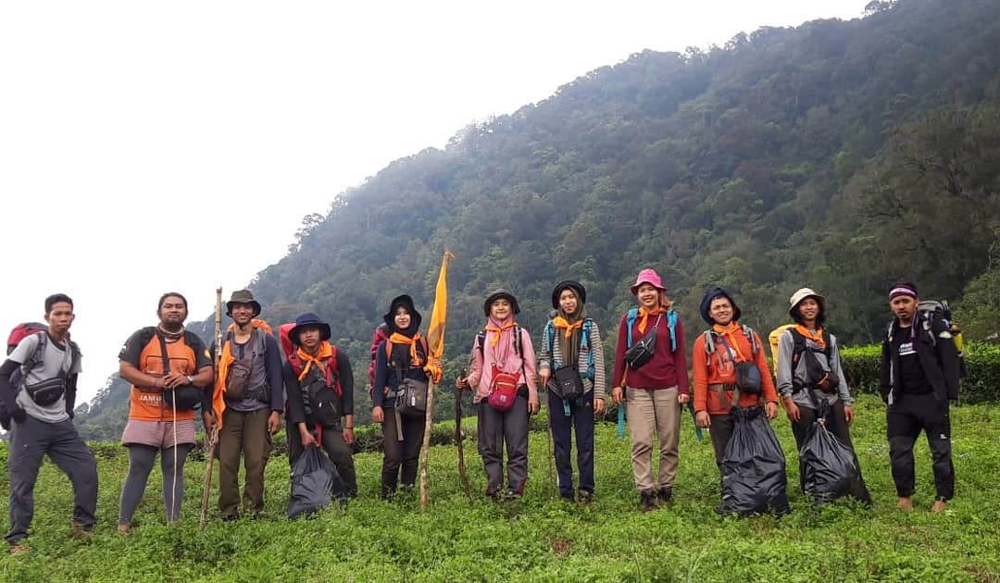

Galeri Foto Kegiatan
 


Minat dan Bakat
Selain memiliki BEM, Universitas Respati Indonesia juga memiliki Unit Kegiatan Mahasiswa (UKM) dan beberapa Komunitas, UKM dan Komunitas merupakan club ekstrakulikuler sebagai wadah untuk mempelajari ataupun mengesplor bakat maupun minat yang dimiliki oleh mahasiswa!
Perkenalan
Diawal menjadi Mahasiswa, akan diadakan UKM expo untuk memperkenalkan masing-masing UKM dan Komunitas ke mahasiswa agar bisa mengesplor minat dan bakat mereka serta perekrutan anggota baru untuk Mahasiswa yang ingin bergabung, Unit Kegiatan Mahasiswa atau dikenal (UKM) dan Komunitas sendiri adalah wadah aktivitas Mahasiswa luar kelas untuk mengembangkan minat, bakat dan keahlian tertentu.
Mahasiswa yang telah resmi menjadi anggota dari masing-masing UKM dan Komunitas akan mendapatkan pelatihan dari UKM dan Komunitas tersebut, sehingga sangat memungkinkan untuk Mahasiswa yang belum mempunyai bakat khusus namun ingin bergabung. UKM dan Komunitas URINDO juga bisa dikatakan sebagai wadah untuk mempelajari ekstrakulikuler yang telah teredia, disini Mahasiswa juga akan mendapatkan pengalaman baru dan memiliki keluarga baru didunia perkuliahan.
Untuk itu sangat disarankan kepada teman-teman Mahasiswa agar dapat bergabung dengan UKM dan Komunitas yang ada di Universitas Respati Indonesia dan selalu mengasah bakat yang dimiliki.
Struktur Organisasi Fakultas Teknologi Informasi
Desmiwati, S.Kom, M.Si
Dekan Fakultas Teknologi Informasi

Andi Susilo, S.Kom, M.TI
Ketua Program Studi Ilmu Komputer
Ramadhani Ulansari S.Kom, MT
Ketua Program Studi Sistem Informasi
Informasi Kegiatan Mahasiswa